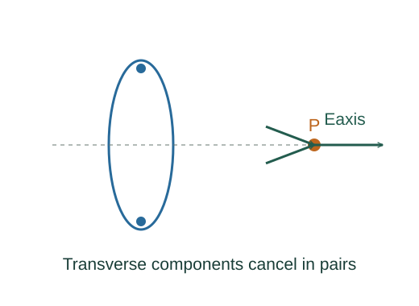

Derive the field on the axis of a charged ring
An electric field is force per unit positive test charge. For a uniformly charged ring, symmetry cancels transverse field components while the axial components add.
What the symbols mean
Q: total ring charge; R: ring radius; z: signed axial position measured from the ring centre; Eaxis: signed axial component.
When this applies
Uniform thin ring of charge in electrostatics and vacuum. The observation point lies on the ring axis.

Define electric field independently of a test charge
For a sufficiently small test charge q, field is the force divided by q. Coulomb’s law gives a source element’s field.
Go deeper at this stepState the source force lawCoulomb’s law and superpositionUse rotational symmetry
Opposite ring elements contribute equal and opposite transverse components at an axial observation point. Their axial components have the same direction for a given signed z and Q.
Project each contribution
The element-to-point distance is √(R² + z²). The cosine of its angle to the axis is z divided by that distance.
Integrate around the ring
At a fixed axial point, the geometric factor is constant over the ring. The integral of dq is the total charge Q.
Where each equation comes from
Derived equations link to an argument below. Definitions, physical postulates and constitutive models are identified as the inputs of that argument.
Derivation of the main resultDerived result
Conditions: Uniform thin ring of charge in electrostatics and vacuum. The observation point lies on the ring axis.
- Define electric field independently of a test charge. For a sufficiently small test charge q, field is the force divided by q. Coulomb’s law gives a source element’s field. Explain the equation used in step 1 ↗ State the source force law ↗
- Use rotational symmetry. Opposite ring elements contribute equal and opposite transverse components at an axial observation point. Their axial components have the same direction for a given signed z and Q.
- Project each contribution. The element-to-point distance is √(R² + z²). The cosine of its angle to the axis is z divided by that distance. Explain the equation used in step 3 ↗
- Integrate around the ring. At a fixed axial point, the geometric factor is constant over the ring. The integral of dq is the total charge Q. Explain the equation used in step 4 ↗
Equation in step 1Derived result
What is being shown: Define electric field independently of a test charge
For a sufficiently small test charge q, field is the force divided by q. Coulomb’s law gives a source element’s field.
Starting conditions and inputs: Uniform thin ring of charge in electrostatics and vacuum. The observation point lies on the ring axis.
Equation in step 3Derived result
What is being shown: Project each contribution
The element-to-point distance is √(R² + z²). The cosine of its angle to the axis is z divided by that distance.
Earlier results used in this argument:
- 𝐄 = 𝐅/q; dE = ke dq/(R² + z²) (Derived result)
Equation in step 4Derived result
What is being shown: Integrate around the ring
At a fixed axial point, the geometric factor is constant over the ring. The integral of dq is the total charge Q.
Earlier results used in this argument:
- 𝐄 = 𝐅/q; dE = ke dq/(R² + z²) (Derived result)
- dEaxis = ke z dq/(R² + z²)³ᐟ² (Derived result)
A worked example
At z = 0 the field vanishes by symmetry. Far from the ring, |z| ≫ R, the expression approaches the field of a point charge Q.
Derivation behind this calculation ↗A point to keep straight
This axial result does not describe points off the axis. Zero field at the centre does not imply zero potential there.
Check the assumptions and derivation ↗